Menge der Urbilder als Topologie
1. Satz
Seien 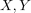 nichtleere Mengen und  eine Abbildung mit 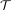 als Topologie über 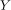.
Dann ist auch 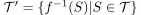 eine Topologie
eine Abbildung mit 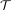 als Topologie über 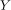.
Dann ist auch 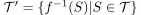 eine Topologie
2. Beweis
Es gilt 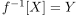 und 
2.1. Abgeschlossenheit gegenüber Schnitten (Topologie)
Seien 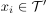, so existieren 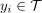 mit 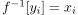 und es gilt:
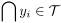
1